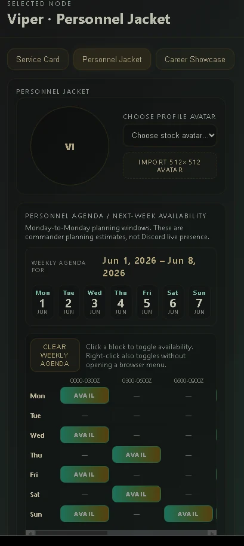
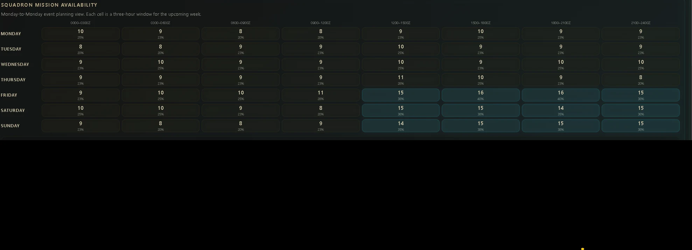
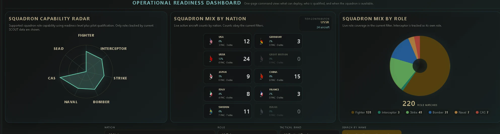
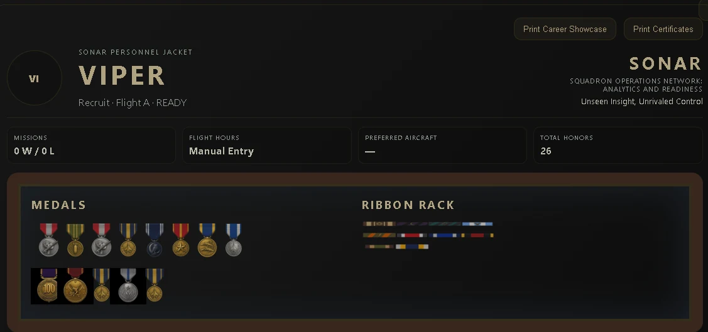

Personnel
Roster, personnel jackets, role status, rank, duty position, service history, and individual readiness context.
S.C.O.U.T. / SONAR
S.C.O.U.T. is the mission-command layer. SONAR is the living status picture.
This is where personnel, availability, mission requirements, force allocation, loadout review, AARs, recognition, and Decagon C2 doctrine become a practical command rhythm for organized squadrons.
Battle Rhythm
The scheduler belongs here, not on the homepage, because it needs the full command story: pilots submit availability, command sees squadron capacity, and the mission package can be built around real participation windows.


What S.C.O.U.T. Owns
S.C.O.U.T. / SONAR owns the squadron’s command-and-control workflow. It combines people, mission intent, readiness, timing, loadout review, execution status, AARs, and recognition into one operational loop.
Roster, personnel jackets, role status, rank, duty position, service history, and individual readiness context.
Mission creation, tasking, signup, force allocation, commander intent, loadout review, and package approval.
Live status, readiness visibility, active mission state, role filtering, and command attention indicators.
AAR learning, medals, ribbons, certificates, career showcase, and personnel history write-back.
Command Tools
Commanders need more than a mission title. They need to know whether the squadron has the roles, capability mix, and available pilots required to make the mission credible.


Decagon C2 Foundation
The Decagon C2 System is the command sequence underneath S.C.O.U.T. It is not just a navigation list; it is the logic a commander follows to determine whether the unit can plan, staff, launch, execute, assess, and recognize a mission.
Operational sentence: Start with the people. Define the mission. Check their skills. Confirm readiness. Verify aircraft and equipment. Set the timeline. Build the mission. Execute the operation. Capture the AAR. Recognize performance.
Commander’s Intent and Weekly Battle Rhythm live together inside the timing layer: command defines the operational need, sets the rhythm, then uses availability and readiness to decide when the squadron can act.
After Action and Recognition
S.C.O.U.T. closes the mission with AARs, lessons learned, award decisions, ribbons, medals, and visible service history. Recognition makes the squadron feel alive and preserves the story of what the team accomplished.
